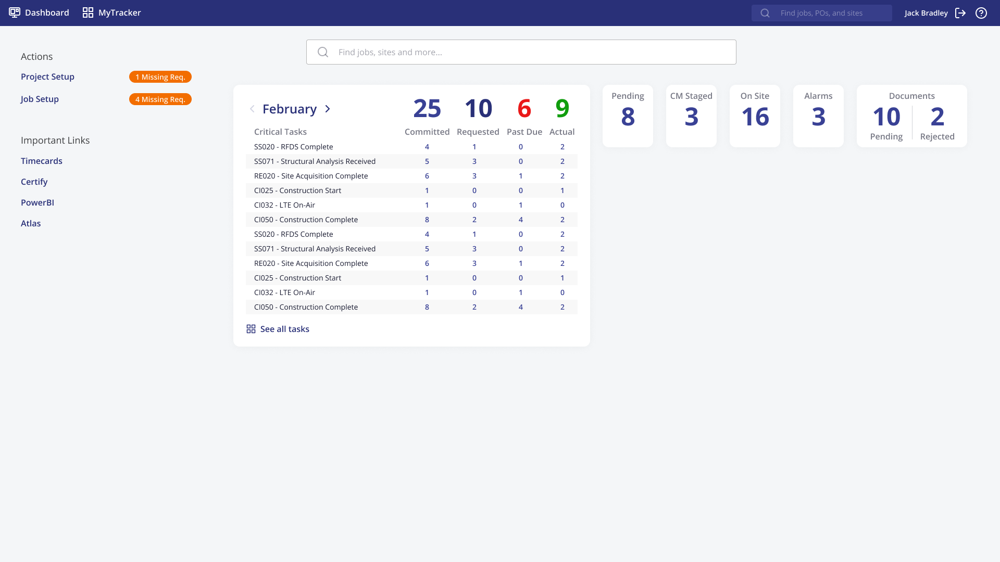
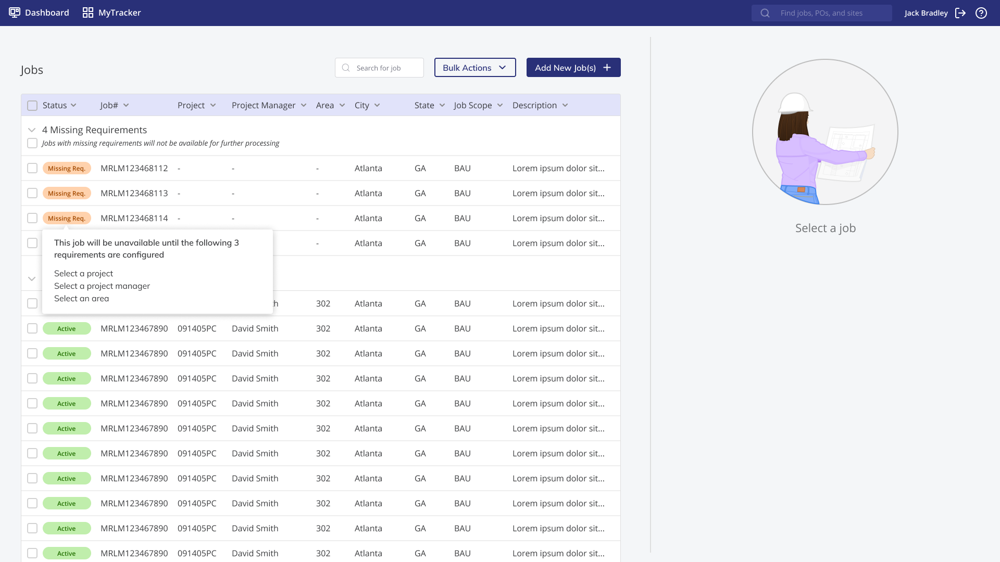
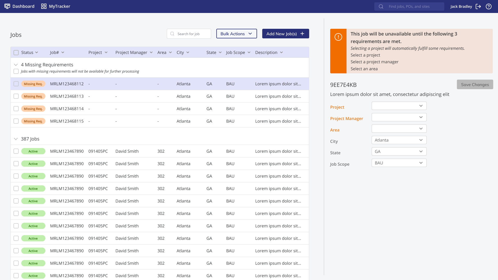
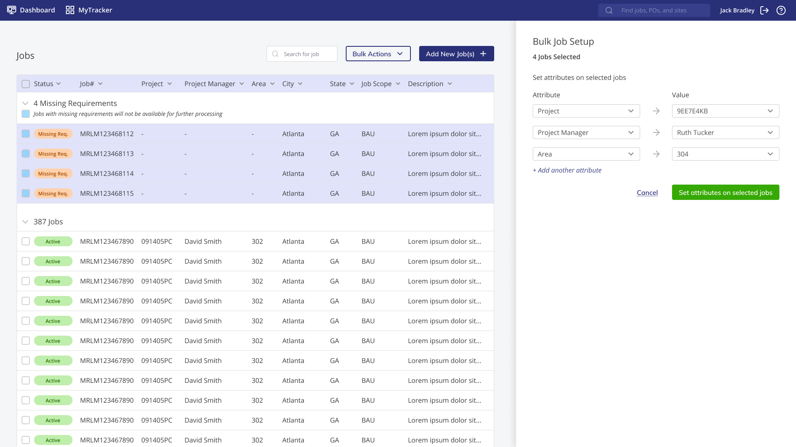
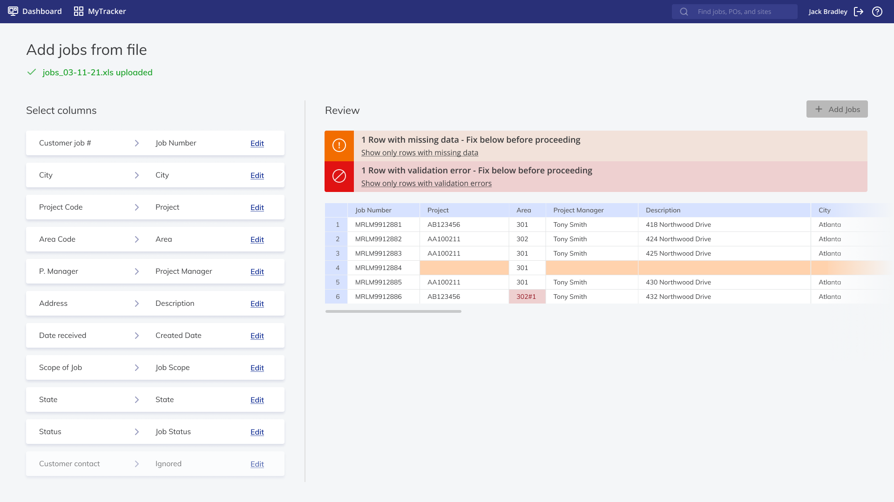

Operations Management
Application Background
An existing application that supports the lifecycle of a customer job provides admins with a way to import and manage both jobs and contracts in the system. Jobs are pulled in through customer portals, and requirements need to be met before they can be worked on by a project manager.
The Problem
When the app was initially developed, the admin role was given less priority as there are a lot fewer admins than general users. As the tool matured it was noted that admins had a hard time knowing what their duties were in the system, and how they should carry them out.
A big part of an admins role is making sure that a job that enters the system has the required information on it to be worked on by a project manager. To do so, an admin would have to navigate between 3 different screens and try to figure out what they needed to enter.
This problem was due to amplify as more admins from other companies were about to be onboarded, so the product team asked for this area to be investigated.
Approach Summary
- Work with a business analyst to understand the current process
- Observe admins going through the process, followed by interviews to highlight pain points
- Met with future users of the app to see how they currently handle job assignments
- Presented pain points back to product team with proposed approach to solution. This was to ensure that we weren't going to create a solution that goes outside the requirements they need to enforce.
- Created a prototype and usability test for existing and future users of the application
- Refined the prototype after many testing sessions and validated refined version with users
- Delivery of prototype to product development team
Results
Users were relieved to discover that this problem was being worked on. Existing users were delighted with being able to do their tasks on one screen, and new users found the process easy to jump into without guidance.
Solution Highlights
The proposed additions to the user dashboard. An admin is a multi-functional user and has other duties aside from job setup. Their admin functions were originally hidden in a hamburger menu. The proposed solution moved actions to the left-hand side of the dashboard level and added tags to catch the users' eye when there was an admin item that required their attention.
After a user sees that they have a required task in the job setup section, they will be brought to a list of the jobs in the system. The jobs with missing requirements are pulled to the top, and if the user hovers over one they can see the missing pieces of data that they are required to enter.
When a job is selcted in the list, the system reminds users of the information that they have to fulfill and allows them to input it.
Another requirement discovered during interviews, was the need to be able to bulk setup jobs. A user can select multiple items from the list and assign common attributes to them at the same time.
Jobs can also be added to the system in bulk from a spreadsheet, so a workflow was created to allow users to map spreadsheet fields to system fields, and validate the results before import.
